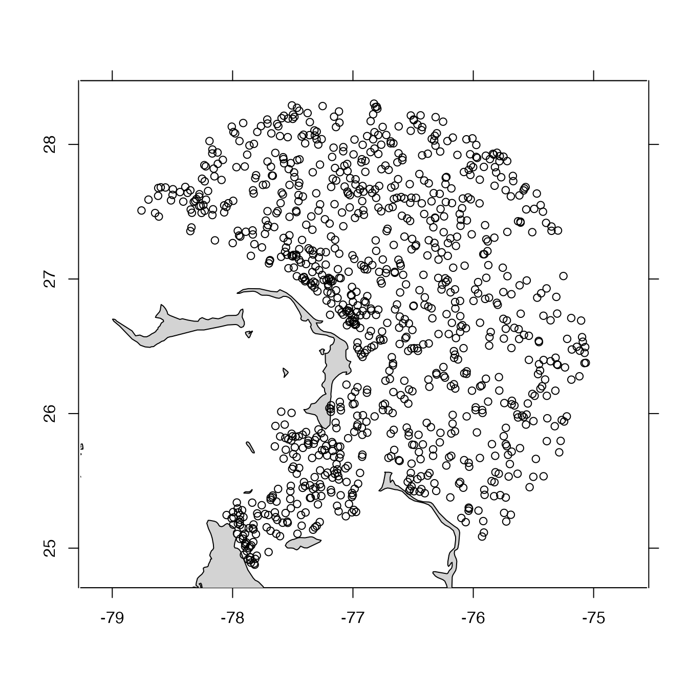
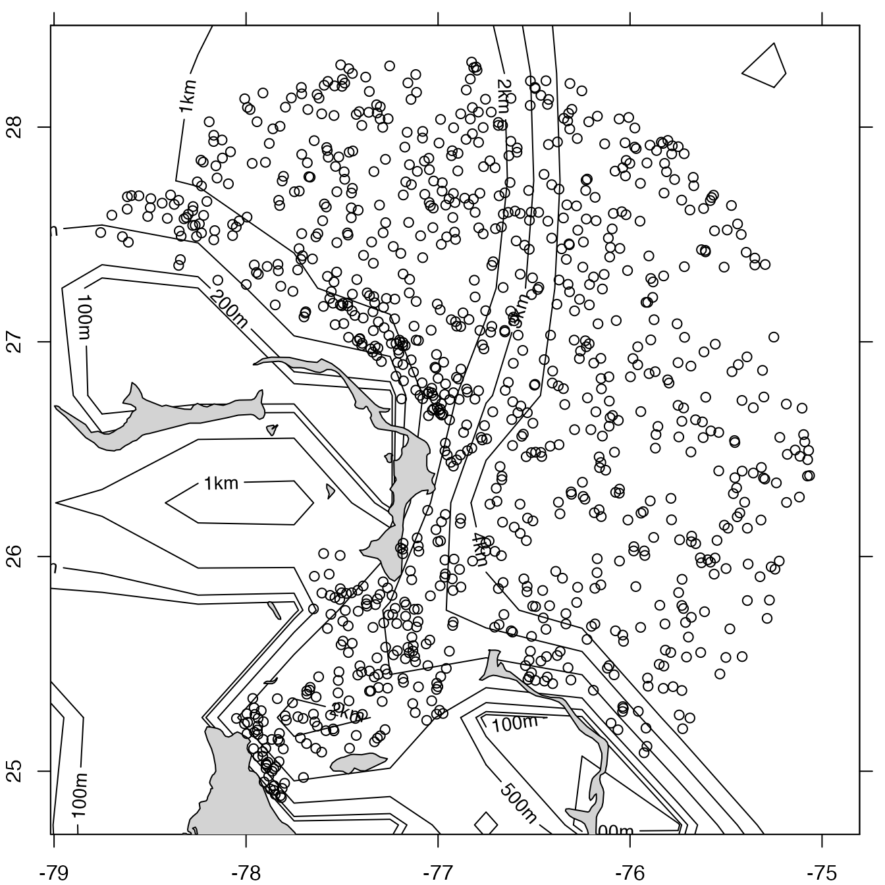

The action depends on the type of the object, and
this is set up by the function that created the object;
see “Details”. These are basic plot styles, with
somewhat limited scope for customization. Since the data with
argoFloats objects are easy to extract, users should
not find it difficult to create their own plots to meet a
particular aesthetic; Example 5C provides an example for
maps.
# S4 method for argoFloats plot( x, which = "map", bathymetry = TRUE, geographical = 0, xlim = NULL, ylim = NULL, xlab = NULL, ylab = NULL, type = NULL, cex = NULL, col = NULL, pch = NULL, bg = NULL, mar = NULL, mgp = NULL, eos = "gsw", mapControl = NULL, profileControl = NULL, QCControl = NULL, summaryControl = NULL, TSControl = NULL, debug = 0, ... )
Arguments
| x | an |
|---|---|
| which | a character value indicating the type of plot. The possible
choices are |
| bathymetry | an argument used only if |
| geographical | flag indicating the style of axes
for the |
| xlim, ylim | numerical values, each a two-element vector, that
set the |
| xlab | a character value indicating the name for the horizontal axis, or
|
| ylab | as |
| type | a character value that controls the line type, with |
| cex | a character expansion factor for plot symbols, or |
| col | the colour to be used for plot symbols, or |
| pch | an integer or character value indicating the type of plot symbol, or |
| bg | the colour to be used for plot symbol interior, for |
| mar | either a four-element vector giving the margins to be used for
the plot (see |
| mgp | either a three-element vector giving the geometry for
axis labels (see |
| eos | a character value indicating the equation of state to use
if |
| mapControl | a list that permits particular control of the |
| profileControl | a list that permits control of the |
| QCControl | a list that permits control of the |
| summaryControl | a list that permits control of the |
| TSControl | a list that permits control of the |
| debug | an integer specifying the level of debugging. |
| ... | extra arguments passed to the plot calls that are made within this function. |
Details
The various plot types are as follows.
For
which="map", a map of profile locations is created if subtype is equal to cycles, or a rectangle highlighting the trajectory of a float ID is created when subtype is equal to trajectories. This only works if thetypeis"index"(meaning thatxwas created bygetIndex()or a subset of such an object, created withsubset,argoFloats-method()), orargos(meaning thatxwas created withreadProfiles(). The plot range is auto-selected. If theocedatapackage is available, then itscoastlineWorldFinedataset is used to draw a coastline (which will be visible only if the plot region is large enough); otherwise, if theocepackage is available, then itscoastlineWorlddataset is used. Thebathymetryargument controls whether (and how) to draw a map underlay that shows water depth. There are three possible values forbathymetry:FALSE, meaning not to draw bathymetry;TRUE(the default), meaning to draw bathymetry using data downloaded withoce::download.topo(), as in Example 4;A list with items controlling both the bathymetry data and its representation in the plot, as in Example 5. Those items are:
source, a mandatory value that is either (a) the string"auto"(the default) to useoce::download.topo()to download the data or (b) a value returned byoce::read.topo().contour, an optional logical value (withFALSEas the default) indicating (as in Examples 5A and 5B) whether to represent bathymetry with contours (with depths of 100m, 200m, 500m shown, along with 1km, 2km up to 10km), as opposed to an image;colormap, ignored ifcontourisTRUE, an optional value that is either the string"auto"(the default) for a form of GEBCO colors (as in Example 5C) computed withoce::oceColorsGebco(), or a value computed withoce::colormap()applied to the bathymetry data; andpalette, ignored ifcontourisTRUE, an optional logical value (withTRUEas the default) indicating (again, as in Example 5C) whether to draw a depth-color palette to the right of the plot.
For
which="profile", a profile plot is created, showing the variation of some quantity with pressure or potential density anomaly, as specified by theprofileControlargument; see Examples 8 and 9.For
which="QC", two time-series panels are shown, with time being that recorded in the individual profile in the dataset. An additional argument namedparametermust be given, to name the quantity of interest. The function only works ifxis anargoFloatsobject created withreadProfiles(). The top panel shows the percent of data flagged with codes 1 (meaning good data), 2 (probably good), 5 (changed) or 8 (estimated), as a function of time (lower axis) and (if all cycles are from a single Argo float) cycle number (upper axis, with smaller font). Thus, low values on the top panel reveal profiles that are questionable. Note that if all of data at a given time have flag 0, meaning not assessed, then a quality of 0 is plotted at that time. The bottom panel shows the mean value of the parameter in question regardless of the flag value. See Example 7.For
which="summary", one or more time-series panels are shown in a vertical stack. If there is only one ID inx, then the cycle values are indicated along the top axis of the top panel. The choice of panels is set by thesummaryControlargument. See Example 10.For
which="TS", an overall TS plot is created. This only works ifxis an argoFloats object of type"argos", i.e. if it was created byreadProfiles(). The scales for the plot can be altered by puttingSlimandTlimarguments in the...list; see the documentation foroce::plotTS()for other arguments that can be provided. This plot has a default color code to represent bad, good, and not assessed data. This scheme comes from sections 3.2.1 and 3.2.2 of Carval et al. (2019), in which data are considered bad if flagged 3, 4, 6, or 7, good if flagged 1, 2, 5, or 8, and not accessed if flagged 0; good values are plotted with black symbols, bad ones are plotted with red symbols, and not assessed values are plotted with gray symbols.
References
Carval, Thierry, Bob Keeley, Yasushi Takatsuki, Takashi Yoshida, Stephen Loch Loch, Claudia Schmid, and Roger Goldsmith. Argo User's Manual V3.3. Ifremer, 2019. doi: 10.13155/29825
Author
Dan Kelley and Jaimie Harbin
Examples
# Example 1: map profiles in index, highlighting a neighborhood of 30 library(argoFloats) data(index) plot(index, bathymetry=FALSE)lon <- index[["longitude"]] lat <- index[["latitude"]] dist <- oce::geodDist(lon, lat, -77.06, 26.54) o <- order(dist) index30 <- subset(index, o[1:30])#># Example 3: TS of first 10 profiles # (Slow, so not run by default.) # \dontrun{ index10 <- subset(index, 1:10)#>#> Warning: Of 10 profiles read, 9 have >10% of salinity values with QC flag of 4, signalling bad data. #> The indices of the bad profiles are as follows. #> 1 2 3 4 5 6 7 8 10#> Warning: Of 10 profiles read, 9 have >10% of temperature values with QC flag of 4, signalling bad data. #> The indices of the bad profiles are as follows. #> 1 2 3 4 5 6 7 8 10# } # Example 4: map with bathymetry # (Slow, so not run by default.) # \dontrun{ par(mar=c(3, 3, 1, 2)) plot(index, bathymetry=TRUE)# } # Example 5: map with fine-grained bathymetry control # (Slow, so not run by default.) # \dontrun{ par(mar=c(2, 2, 1, 1)) topoFile <- oce::download.topo(-82, -71, 23, 30, 2) topo <- oce::read.topo(topoFile) # Example 5A. Simple contour version. plot(index, bathymetry=list(source=topo, contour=TRUE))# Example 5B. Simple contour version, using coarse dataset (ok on basin-scale). data(topoWorld, package="oce") plot(index, bathymetry=list(source=topoWorld, contour=TRUE))# Example 5D. World view with Mollweide projection (Canada Day, 2020) jul1 <- subset(getIndex(), time=list(from="2020-09-01", to="2020-09-02"))#>plot(jul1, which="map", mapControl=list(projection=TRUE), bathymetry=FALSE, pch=20, col=4, cex=0.75)# Example 5E. Customized map, sidestepping this function. lon <- topo[["longitude"]] lat <- topo[["latitude"]] asp <- 1/cos(pi/180*mean(lat)) # Limit plot region to float region. xlim <- range(index[["longitude"]]) ylim <- range(index[["latitude"]]) # Colourize 1km, 2km, etc, isobaths. contour(x=lon, y=lat, z=topo[["z"]], xlab="", ylab="", xlim=xlim, ylim=ylim, asp=asp, col=1:6, lwd=2, levels=-1000*1:6, drawlabels=FALSE)# Show land data(coastlineWorldFine, package="ocedata") polygon(coastlineWorldFine[["longitude"]], coastlineWorldFine[["latitude"]], col="lightgray")# Example 6: TS plot for a particular argo library(argoFloats) a <- readProfiles(system.file("extdata", "SR2902204_131.nc", package="argoFloats"))#> Warning: Of 1 profiles read, 1 has >10% of BBP700 values with QC flag of 4, signalling bad data. #> The indices of the bad profiles are as follows. #> 1#> Warning: Of 1 profiles read, 1 has >10% of chlorophyllA values with QC flag of 4, signalling bad data. #> The indices of the bad profiles are as follows. #> 1#> Warning: Of 1 profiles read, 1 has >10% of oxygen values with QC flag of 4, signalling bad data. #> The indices of the bad profiles are as follows. #> 1#> Warning: Of 1 profiles read, 1 has >10% of pressure values with QC flag of 4, signalling bad data. #> The indices of the bad profiles are as follows. #> 1# Example 7: Temperature QC plot for 25 cycles of a float in the Arabian Sea # \dontrun{ library(argoFloats) ais <- getIndex(filename="synthetic") sub <- subset(subset(ais, ID='2902123'), 50:75)#>#>#> Warning: Of 26 profiles read, 26 have >10% of chlorophyllA values with QC flag of 4, signalling bad data. #> The indices of the bad profiles are as follows. #> 1 2 3 4 5 6 7 8 9 10 11 12 13 14 15 16 17 18 19 20 21 22 23 24 25 26#> Warning: Of 26 profiles read, 26 have >10% of oxygen values with QC flag of 4, signalling bad data. #> The indices of the bad profiles are as follows. #> 1 2 3 4 5 6 7 8 9 10 11 12 13 14 15 16 17 18 19 20 21 22 23 24 25 26#> Warning: Of 26 profiles read, 1 has >10% of salinity values with QC flag of 4, signalling bad data. #> The indices of the bad profiles are as follows. #> 18# } # Example 8: Temperature profile of the 131st cycle of float with ID 2902204 library(argoFloats) a <- readProfiles(system.file("extdata", "SR2902204_131.nc", package="argoFloats"))#> Warning: Of 1 profiles read, 1 has >10% of BBP700 values with QC flag of 4, signalling bad data. #> The indices of the bad profiles are as follows. #> 1#> Warning: Of 1 profiles read, 1 has >10% of chlorophyllA values with QC flag of 4, signalling bad data. #> The indices of the bad profiles are as follows. #> 1#> Warning: Of 1 profiles read, 1 has >10% of oxygen values with QC flag of 4, signalling bad data. #> The indices of the bad profiles are as follows. #> 1#> Warning: Of 1 profiles read, 1 has >10% of pressure values with QC flag of 4, signalling bad data. #> The indices of the bad profiles are as follows. #> 1par(mfrow=c(1, 1)) par(mgp=c(2, 0.7, 0)) # mimic the oce::plotProfile() default par(mar=c(1,3.5,3.5,2)) # mimic the oce::plotProfile() default plot(a, which="profile")# Example 9: As Example 8, but showing temperature dependence on potential density anomaly. library(argoFloats) a <- readProfiles(system.file("extdata", "SR2902204_131.nc", package="argoFloats"))#> Warning: Of 1 profiles read, 1 has >10% of BBP700 values with QC flag of 4, signalling bad data. #> The indices of the bad profiles are as follows. #> 1#> Warning: Of 1 profiles read, 1 has >10% of chlorophyllA values with QC flag of 4, signalling bad data. #> The indices of the bad profiles are as follows. #> 1#> Warning: Of 1 profiles read, 1 has >10% of oxygen values with QC flag of 4, signalling bad data. #> The indices of the bad profiles are as follows. #> 1#> Warning: Of 1 profiles read, 1 has >10% of pressure values with QC flag of 4, signalling bad data. #> The indices of the bad profiles are as follows. #> 1par(mgp=c(2, 0.7, 0)) # mimic the oce::plotProfile() default par(mar=c(1,3.5,3.5,2)) # mimic the oce::plotProfile() default plot(a, which="profile", profileControl=list(parameter="temperature", ytype="sigma0"))# Example 10: Summary plot # \dontrun{ library(argoFloats) a <- readProfiles(getProfiles(subset(getIndex(), ID=1901584)))#>#> Warning: Of 154 profiles read, 31 have >10% of salinity values with QC flag of 4, signalling bad data. #> The indices of the bad profiles are as follows. #> 98 106 114 119 123 124 125 126 127 128 129 130 132 133 134 135 136 137 138 139 140 141 142 144 145 146 147 148 149 150 151#> Warning: Of 154 profiles read, 30 have >10% of temperature values with QC flag of 4, signalling bad data. #> The indices of the bad profiles are as follows. #> 106 114 119 123 124 125 126 127 128 129 130 132 133 134 135 136 137 138 139 140 141 142 144 145 146 147 148 149 150 151# }